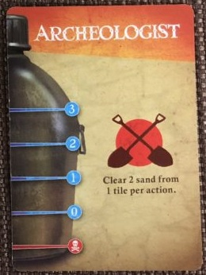
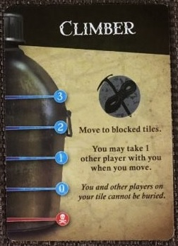
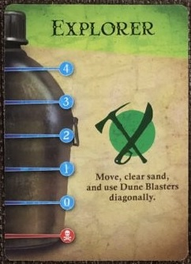
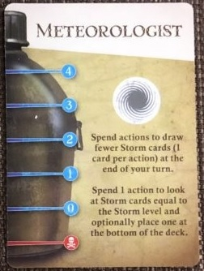
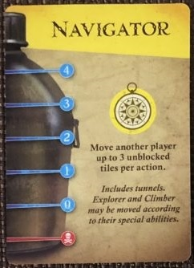
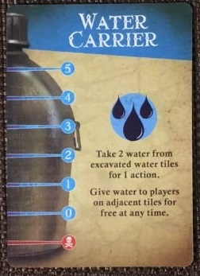

*Lego pieces sold seperatly.*
|  | The Archeologist can remove 2 sand markers from any single tile for 1 action. |  | The Climber can move to blocked tiles (tiles with 2 or more Sand markers on them). He may also take one other player with him whenever he moves. Pawns on the climbers tile are never buried and can leave the tile containing the Climber even if there are 2 or more Sand markers on it. |
|  | The Explorer can move, remove sand, and may use Dune Blasters diagonally. |  | The Meterologist may spend actions to draw fewer Storm cards (1 card per action) at the end of her turn. She may also choose to spend 1 action to look at the top Storm cards, equal to the Storm level, and may place one at the bottom of the deck. |
|  | The Navigator may move another player up to 3 unblocked tiles per action, including tunnels. She can move the Explorer diagnolly and can move the Climber through blocked tiles. When moved in the way, the Climber can also use his power to take along 1 other player-includingthe Navigator! |  | The Water Carrier can take 2 water from already excavated wells for 1 action. She may also give water to players on adjacent tiles for free at any time. The Water Carrier also starts with 5 (instead of 4) water. |